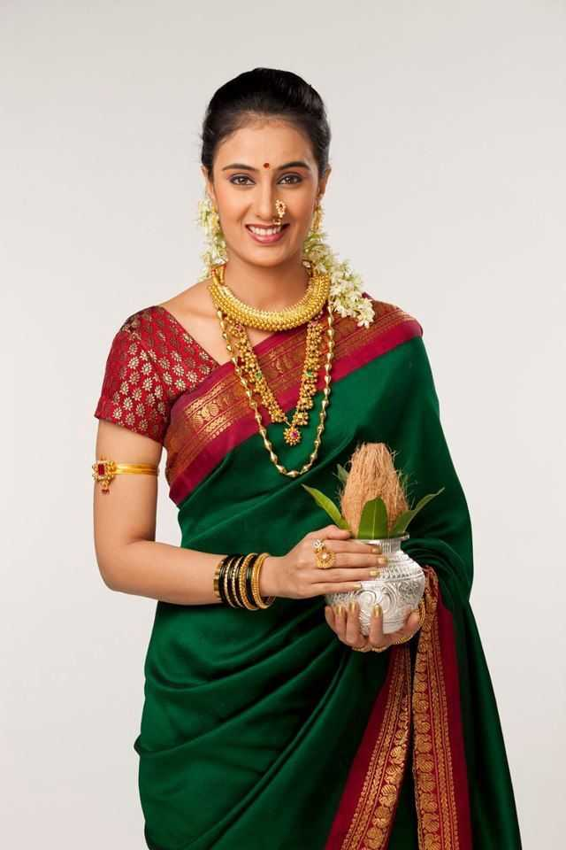
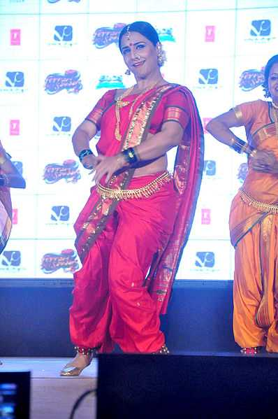

Attire
The traditional attire of Maharashtra required the men to wear a dhoti (a long garment wrapped around the waist
and legs), kurta or a cotton shirt, pheta (headwear or topi) and waistcoat or bandi which was optional.
Women wear choli or blouse on the top and a 9-yard long saree called 'lugade' or 'nauwari saadi'. They usually
wore open sandals or chappals as their footwear. In the 21st century, most of the people have started wearing
western clothes or a fusion of Indian and western wear. The traditional attire is worn by very few but is worn
by many during any religious event or Marathi festival

Folk Dance and Music
The folk music and dances of Maharashtra are Koli, Powada, Banjara Holi dance and Lavani dance. Powada dance
form shows achievements of Shivaji Maharaja, the Maratha ruler. Koli music and dance originated from the
fishermen community for entertainment. Lavani dance form showcases many topics like romance, politics, tragedy,
society, etc. 'Lavani' comes from the "Lavanya" meaning 'beautiful' or 'beauty'.
